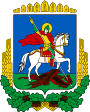
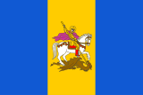
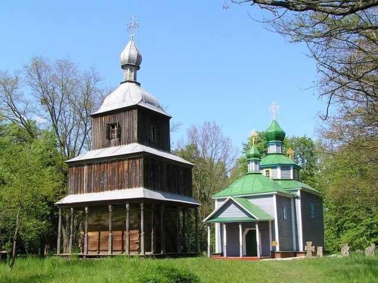
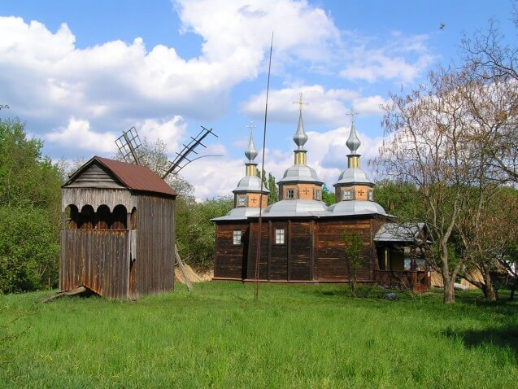
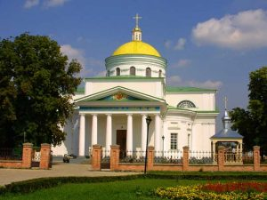
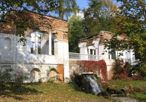
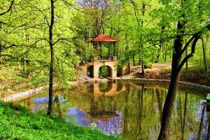
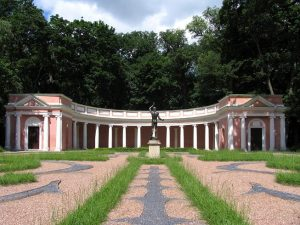
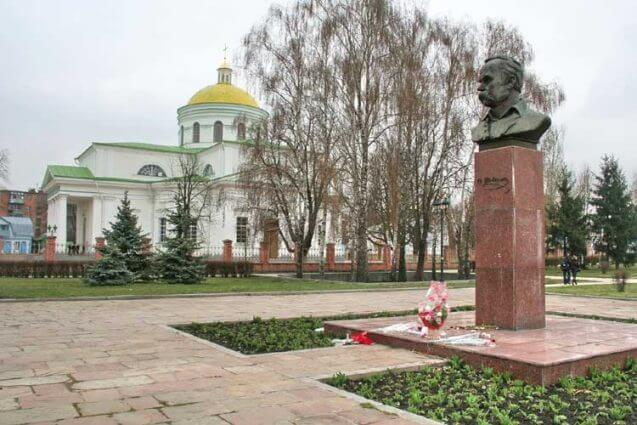
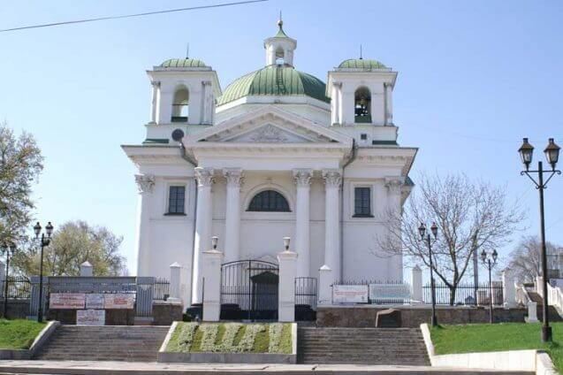

|
Проєкт "7 чудес України"Київська область  |
7 чудес України
Національний заповідник «Переяслав»7 історичних міст та містечок
Біла ЦеркваНаціональний історико-етнографічний заповідник “Переяслав” є одним з найбільших заповідників України. У його склад входить 371 нерухома пам’ятка історії й архітектури українського народу, 26 тематичних музеїв, у фондах яких зберігаються 166 000 експонатів. Серед них колекції, що мають світове значення: 11 церковних споруд, 16 млинів, зібрання давньої кам’яної скульптури й похоронних саркофагів епохи міді й бронзи (69 од.), матеріали поселень трипільської культури, скіфського часу, Черняхівської культури, ікон ХVІІІ-ХХ ст. (1400 од.), зібрання стародрукованих видань, колекція козацького періоду (одяг, військове спорядження і зброя), етнографічні колекції. Загальна площа заповідника – 3050 га, у тому числі 420 000 кв.м. експозиційної площі. До його складу входять території м. Переяслава-Хмельницького, його околиць та Переяслав-Хмельницького району, навколо яких визначені охоронні зони. Вони насичені різночасовими пам’ятками культури, які відображають понад тисячолітню історію міста та багатотисячолітню минувшину краю. Найбільш цікавими з наукової точки зору і з погляду музеєфікації пам’ятками археології є: поселення трипільської культури в м. Переяславі-Хмельницькому, на х. Комуна та в с. Веселе; унікальний комплекс різночасових пам’яток трипільської культури, епохи бронзи, скіфського часу, зарубинецької (вперше на території Переяслав-Хмельницького району були розкопані археологічні пам’ятки, що дали назву археологічній культурі – “зарубинецька”) і черняхівської культур; археологічні пам’ятки давньоруського часу в селах Ташань, Віненці, Пристроми, Циблі; могильники та поселення черняхівської культури в м. Переяславі-Хмельницькому, в с. Соснова та близько 400 курганів і 200 археологічних пам’яток різних епох і культур. Заповіднику підпорядковано 163 пам’ятки. Серед пам’яток архітектури вирізняються унікальні, що мають національну цінність: Вознесенський собор 1696-1700 рр., збудований коштом гетьмана Івана Мазепи, дзвіниця Вознесенського монастиря 1776 р., Переяславський колегіум 1753 р., Михайлівська церква 1666 р., збудована на залишках Михайлівського собору XI ст., будинок і садиба переяславського лікаря А.Козачковського, 1820 р., де в 1845 та в 1859 роках жив і творив великий український поет Т.Г.Шевченко. Заповідник також опікується пам’ятками міста XIX – поч. XX століть, розташованими на його території. Під охороною Заповідника знаходиться територія історико-археологічного комплексу давньоруського Переяслава, з його дитинцем, окольним градом та пам’ятками. В заповідній зоні дитинця та окольного граду розкопані і досліджені археологами пам’ятки : Єпископські ворота XI ст., Єпископський палац XI ст., Спаська церква XI ст., церква св. Федора XI ст., Успенська церква XII ст. У складі заповідника 26 тематичних музеїв різних профілів: історичний, археологічні, літературні, етнографічні, технічні. Основний музейний фонд заповідника складає 170848 одиниць зберігання. Серед них: унікальна археологічна колекція, колекція козацького періоду XVI – XVII ст. (1800 од.), колекції стародруків XVI – XVIII ст. (10 тис. од), ікон XVIII – XX ст. (1400 од.), етнографічні колекції. |
|
|  | |
|  |
 |
Біла Церква — місто обласного значення, значний економічний, культурний та освітній центр Київщини, розташований за 80 км на південь від Києва на річці Рось. Населення Білої Церкви станом на 1 січня 2016 року становило 210,2 тис. жителів. Роль, яку відіграла Біла Церква в історії України важко переоцінити. Фактично, жодне велике українське повстання не оминуло Білу Церкву: під нею Северин Наливайко рубався із поляками; вона була базою для 70 тисяч повстанців Семена Палія, сім тижнів тут збирав військо сам Богдан Хмельницький… Біла Церква пам’ятає Івана Мазепу, провальну облогу Пилипа Орлика. А останнє українське повстання – Коліївщина – зробило власниками міста родину Браницьких, які заклали найбільший на сьогодні архітектурно оформлений ландшафтний парк в Україні – «Олександрію»… Саме в Білій Церкві почалося збройне повстання під керівництвом Симона Петлюри та Володимира Винниченка. Тут відбувалося формування основних сил Директорії. Тут вперше було надруковано повідомлення про відновлення влади незалежної УНР… |
|  | Пам’ятки історії та архітектуриАрхеологічні пам’ятки:
Архітектурні пам’ятки: Зимовий палац ( поч.ХІХ ст.): склади (кінець ХVІІІ – початок ХІХ ст.); Торгові ряди ( 1809-1814); церква святителя Миколая, чудотворця Мирлікійського (1706-1852); Костьол Іоанна Хрестителя ( 1796-1812); собор Преображення Господня (1833-1939); церква св. равноапостольної Марії Магдалини (1842); ансамбль споруд поштової станції ( 1825-1831); ансамбль споруд білоцерківської гімназії ( 1843-1847) – головний корпус Білоцерківського аграрного університету ( 1930-ті рр.); каплиця-пам’ятник землякам, які загинули в локальних війнах ( 1996). Головною визначною пам’яткою міста є дендропарк «Олександрія», який розташований на околиці Білої Церкви. В ньому гармонічно поєднуються природний рельєф, штучно створені композиції з дерев, каскади ставків і архітектурні споруди: бесідки, павільйони, колони, колонади, мости з романтичними назвами.Дендропарк розташований на площі 297 гектарів на березі річки Рось. Площа декоративних водойм парку (ставки та р. Рось) становить 21 га. Загальна довжина алей і доріжок становить понад 20 км. В східній частині дендропарку «Олександрія», неподалік головного входу знаходиться споруда, яка носить назву «Ротонда», яка збудована в стилі розвинутого класицизму, у вигляді напівкруглого павільйону з прорізаною в передній стіні напівкруглою аркою. Однією з найоригінальніших архітектурних споруд парку є «Руїни», побудовані наприкінці XVIII століття.Своїм виглядом вони нагадують старовинний зруйнований замок. Основна мета споруди — створити ілюзію зруйнованих часом будівель. Крім естетичного призначення, «Руїни» виконують практичну роль підпірної стіни. З під «Руїн» б’є потужній водоспад. Посередині спорудили розташований оглядовий майданчик, з якого відкривається краєвид на річку Рось. Одним з найцікавіших об’єктів «Олександрії» є Колонада «Луна», виконана у вигляді грецького амфітеатру. Свою назву дістала за чудові акустичні властивості. «Китайський місток» — так називається ще одна мала архітектурна споруда. Таку назву вона дістала завдяки альтанці на містку, дах якої нагадує дахи китайських пагод. Спорудження містка-альтанки відбувалося в період активної забудови парку. Місцевий ландшафт підкреслює екзотичний вигляд містка, з якого відкриваються краєвиди на верхнє озеро з водоспадом та нижнє озеро. В західній частині парку знаходиться найвища Палієва гора. Крутий, кам’яний схил цієї гори сягає у висоту 27 метрів. На початку XVIII століття тут тривалий час (1702–1704 рр.) знаходився з табором один із загонів козацького ватажка Семена Палія. В глибині Палієвої гори і досі видно рештки земляних укріплень козаків. У 1980 році на честь тих давніх подій, на горі був встановлений пам’ятник. В північній частині знаходиться сад «Мур». Побудований з метою створення на території парку ще більш відокремленого, інтимного куточка, який дозволяв би господарям уникнути небажаного спілкування з відвідувачами. В південній частині парку, неподалік від річки Рось, знаходиться споруда, яка має назву Турецький будиночок. Він був побудований після турецької кампанії 1828 року. В його стіни були вмуровані мармурові плити, на яких є написи древньотурецькою мовою, що прославляють велич шаха Махмуда Хача Гази, який побудував неприступну фортецю в місті Варна (Болгарія). Після взяття фортеці російськими військами фельдмаршал Румянцев (який товаришував з графами Браницькими) привіз їх як трофей в «Олександрію». |
|  | |
|  | |
|  |
|  | Тарас Шевченко у Білій ЦерквіІсторія міста тісно пов’язана з ім’ям Тараса Шевченка. Коли Тарас був козачком пана Енгельгарда — родича Браницьких, по дорозі до Вільно вони заїжджали до Білої Церкви. Браницька показала гостю свій маєток і парк «Олександрію». Шевченко неодноразово бував у Білій Церкві. Ці відвідини знайшли своє відображення в повісті «Прогулка с удовольствием и не без морали», написаній 1856 р. Повість особливо цінна тим, що автор у розповіді від першої особи описує цікаві подробиці своєї подорожі через міста й села нинішньої Київської області. Багато місця відведено його перебуванню у Білій Церкві, показу тогочасного побуту її мешканців, у тому числі єврейської громади міста. Шевченко згадує сіре, брудне містечко з невеличкими хатками на не мощених вулицях з босоногими хлопчаками, де не було жодної аптеки, книжної лавки. Це останній прозовий твір письменника. |
|  | Видатні постатіБіла Церква – батьківщина багатьох діячів науки, культури і мистецтва, спорту. Тут народилися: Л.Долинський – художник-портретист; Л.Яциневич – композитор і хоровий диригент, Г.Вул – фізик, академік; Ю.Линник – математик, академік, О.Медвідь – триразовий олімпійський чемпіон з вільної боротьби, Є.Лапінський – олімпійський чемпіон з волейболу, О.Фурса – чемпіон світу з радіоспорту. У Білій Церкві жили і працювали: Шолом-Алейхем (Ш. Рабінович ) – класик єврейської літератури, К.Стеценко – композитор, один з ініціаторів відродження УАПЦ, Л.Курбас – театральний режисер-новатор, В.Кучер – письменник, М.Грищенко – професор, педагог, В.Лебедєв – вчений-селекціонер, Є.Вотчал- фізіолог, засновник української школи фізіологів, академік, М.Вавілов – ботанік, генетик, селекціонер, географ, академік, П.Попович – льотчик-космонавт. Свого часу в місті перебували О.Суворов, М.Кутузов, Г.Державін, Т.Шевченко, І.Нечуй-Левицький, К.Паустовський, Ю.Смолич. |